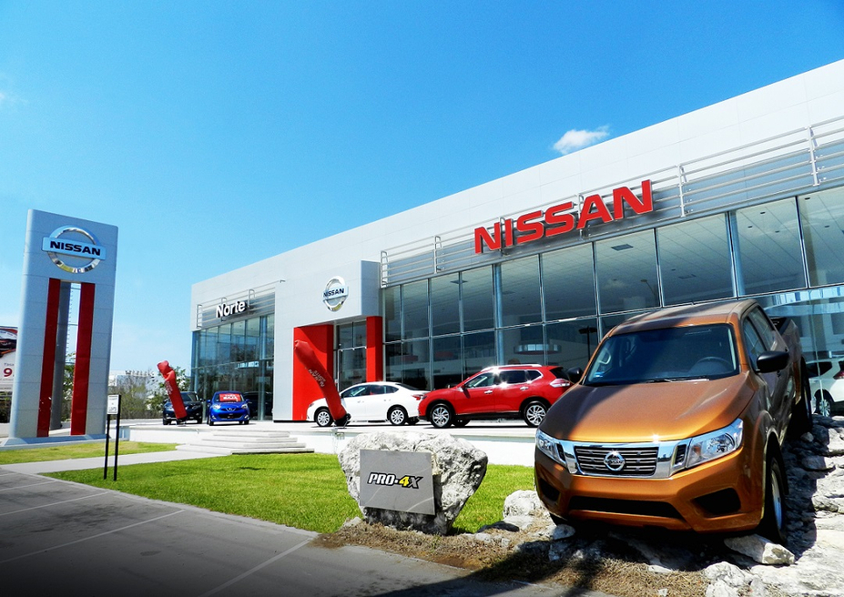

Descubre nuestros últimos modelos y servicios de alta calidad.
Nuestra misión en Nissan Autos es proporcionar a nuestros clientes una experiencia excepcional al comprar, poseer y conducir un vehículo Nissan. Nos comprometemos a ofrecer automóviles de calidad superior que combinen innovación, tecnología y seguridad. Valoramos la satisfacción del cliente y trabajamos incansablemente para superar sus expectativas, brindándoles soluciones de movilidad confiables y sostenibles.
Nuestra visión en Nissan Autos es ser líderes en la industria automotriz, reconocidos por nuestra excelencia en productos y servicios. Aspiramos a ser pioneros en la innovación de vehículos amigables con el medio ambiente y tecnologías de vanguardia. Buscamos establecer una relación de confianza con nuestros clientes, empleados y socios comerciales, y contribuir positivamente a las comunidades en las que operamos. Estas declaraciones de misión y visión representan un enfoque en la calidad, la innovación y el compromiso con la satisfacción del cliente, que son valores importantes para una empresa como Nissan. Puedes personalizar estas declaraciones según los objetivos específicos y los valores de tu agencia de automóviles.
Daniel Alejandro Garcia Holguin 5J